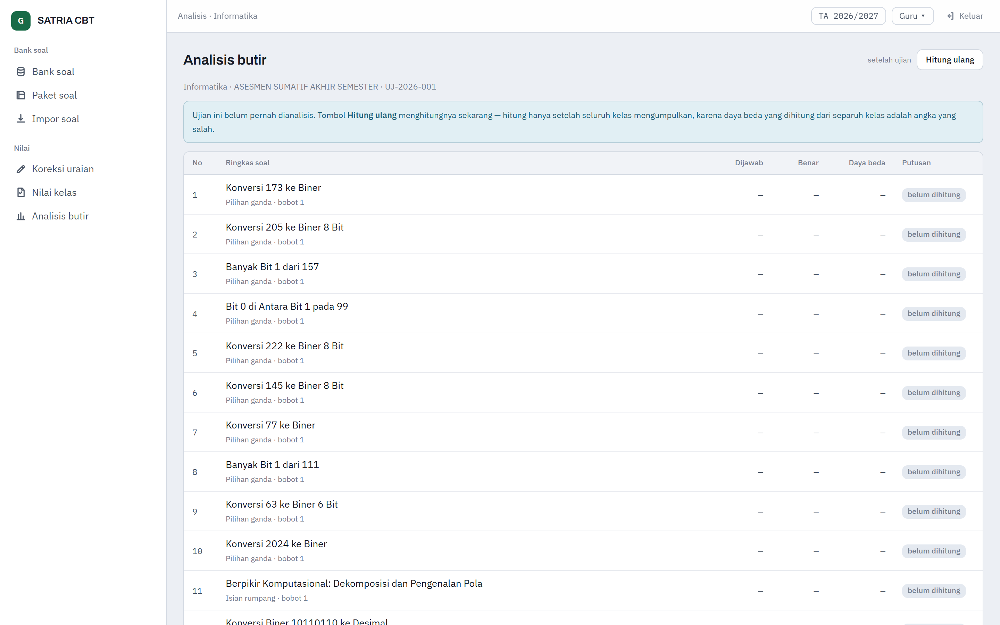

8. Analisis butir
Soal mana yang perlu diperbaiki, dan kapan angkanya bermakna.
Analisis butir menjawab pertanyaan yang berbeda dari nilai kelas. Nilai kelas bertanya bagaimana siswa saya; analisis butir bertanya bagaimana soal saya.
Daftar ujian

Per ujian

Lima kolom:
- Dijawab — berapa siswa menjawab butir ini.
- Benar — berapa yang benar.
- Daya beda — seberapa baik butir ini membedakan siswa yang menguasai dari yang belum.
- Putusan — kesimpulan aplikasi tentang mutu butir.
Hitung hanya setelah seluruh kelas mengumpulkan. Daya beda yang dihitung dari separuh kelas adalah angka yang salah — dan angka salah yang terlihat resmi lebih berbahaya daripada tidak ada angka. Aplikasi menuliskannya sendiri di layar.
Membaca daya beda
Daya beda membandingkan siswa peringkat atas dengan peringkat bawah pada butir yang sama. Angka tinggi berarti butir itu memisahkan keduanya dengan baik; angka mendekati nol berarti butir itu tidak membedakan apa pun.
Tiga tafsir yang berguna:
- Tinggi — butir bekerja sebagaimana mestinya. Pertahankan.
- Rendah — semua menjawab benar, atau semua menjawab salah. Butir itu tidak memberi informasi tentang siapa yang menguasai. Bisa jadi terlalu mudah, bisa jadi soalnya ambigu.
- Negatif — siswa yang lebih kuat justru lebih sering salah. Ini tanda paling kuat bahwa ada yang keliru: kunci yang salah, atau soal yang menyesatkan.
Daya beda negatif hampir selalu berarti kunci jawabannya salah. Periksa kuncinya sebelum menyalahkan siswanya. Bila ternyata kunci memang salah, perbaiki soalnya dan minta Admin menghitung ulang nilai setelah kunci dibetulkan.
Menghitung ulang
Tombol Hitung ulang menghitung analisis dari data yang ada sekarang. Ia tidak mengubah nilai siswa — hanya memperbarui angka analisisnya. Aman ditekan berkali-kali, dan perlu ditekan lagi setelah koreksi uraian selesai.
Analisis butir bukan penilaian siswa. Ia menilai mutu soal. Soal yang jelek membuat siswa kuat terlihat biasa — dan menyimpulkan sesuatu tentang kemampuan kelas dari soal seperti itu adalah kesalahan yang mahal.